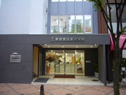
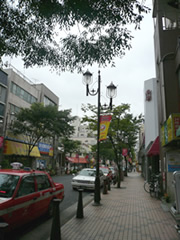

School Overview Our institute originated from a publishing company. The first chairman of our institute has long been engaged in Japan-China and Japan-Korea exchanges. Our purpose and mission in establishing Tokyo Language Education Institute is to promote and promote exchanges between Japan and the international community through general grassroots exchanges. We provide Japanese and other language education for talented individuals from abroad, and then learn about them...
School Overview
Our institute originated from a publishing company. The first chairman of our institute has long been engaged in Japan-China and Japan-Korea exchanges. Our purpose and mission in establishing Tokyo Language Education Institute is to promote and promote exchanges between Japan and the international community through general grassroots exchanges.
For talented individuals from abroad, we provide education in Japanese and other languages, then learn that they will enter Japanese graduate schools or universities, striving to cultivate them into pillars of exchange between Japan and countries around the world.
Our school is recognized as an excellent school by the Tokyo Immigration Bureau and also serves as a proxy for visa applications. Therefore, we have a high visa approval rate. In addition, our academy handles procedures such as visa renewals, visa renewals, and part-time work permit applications for students

Introduction to the Surrounding Environment of the College
It takes only 1 minute on foot from the north exit of JR Sobu Line 'Hirai' Station to our academy. Transportation is very convenient. The area around the academy is a residential area, and besides its convenient living environment, the environment is quiet and elegant, making it ideal for studying. The 'Arakawa' River flows near the academy, with blooming cherry blossoms in spring, making it feel like spring all year round. The shopping street at the south exit of 'Hirai' Station is lively and bustling year-round, making life very convenient. 'Hirai' Station is only a 10-minute drive from the famous 'Akihabara'; and only 20 minutes by train to the bustling 'Shinjuku'. It takes about 5 minutes by car from 'Hirai' Station to reach 'Ryogoku' Station. The Ryogoku Kokugikan at 'Ryogoku' Station is a dedicated venue for Japan's national sport, sumo. It takes about 10 minutes by car from 'Hirai' Station to 'Ueno' Station. Ueno boasts the famous Ueno Park, Ueno Zoo, museums, and art galleries. Students can personally experience various Japanese cultures and traditions

School facilities

Guidance for further education
In terms of academics, our college places great emphasis on preparing for the Japanese University Admission for International Students Examination and the Japanese Language Proficiency Test. Additionally, we provide guidance and mock practice for essays and individual interviews. This enables students to fully demonstrate their abilities during the actual situation. During the advancement period, homeroom teachers of each class hold one-on-one conversations with students to carefully understand their aspirations, assist students in deciding on their next school, and develop entrance exam strategies to provide guidance and advice.
In addition to the above, our college also holds several college entrance information sessions on campus. This helps students understand how to gather information about their preferred schools and guides them on how to fill out application forms. There are also graduates with advanced education experience who have shared their experiences. All students feel that these activities are very helpful for their further studies and are highly praised.
I hope we never forget the feelings everyone felt when deciding to study in Japan. Many students at our academy have worked hard to learn Japanese, achieved high scores in the Japanese University Admission Examination and the Japanese Language Proficiency Test, and graduated with fluent Japanese. They will also become part of this group. For everyone striving forward, as teachers, we will do our utmost to support you
学校概要
本學院的前身為一家出版社。本學院初代理事長長年以來一直從事着日中交流、日韓交流的工作。通過一般的民間交流來帶動和促進日本與國際閒的交流，是我們建立東京言語教育學院的目的與宗旨。
對於國外的有用之材，進行日語等教育，然後知道他們升入日本的大學院或者大學，努力培養他們成爲日本和世界各國交流的棟梁之才。
我學院是東京入管理局認定的優良校，同時也是代理申請簽證的認定學校。所以擁有高簽證率。此外，學生的簽證更新、簽證更換等申請手續，打工許可證的申請等手續也都有我學院代爲
學院周邊環境介紹
從JR總武綫「平井」車站北口到我學院，徒歩只需1分鐘。交通上十分方便。學院周邊為住宅區，除了生活便利的優點之外，環境閑靜優雅，閙中取靜，十分適宜學習。在學院近處流淌的「荒川」河，春天櫻花絢爛，四季如春。「平井」車站南口的商店街終年繁華熱鬧，生活十分方便。「平井」車站距離著名的「秋葉原」車程只需10分鐘；距離繁華的「新宿」車程只需20分鐘。從「平井」車站坐車5分鐘左右可抵達「兩國」車站。「兩國」車站的兩國國技舘是日本的國技「相撲」得專門比賽會場。從「平井」車站坐車10分鐘左右可抵達「上野」車站。「上野」擁有著名的上野公園、上野動物園、博物館和美術館。學生們可以親身體驗到日本的各種文化和傳統
学校设施
升学指导
在學習方面，本學院非常加重對日本留學考試以及日本語能力等級考試的對策力度。此外還對學生進行小論文和個別面試的指導和模擬練習。使學生在臨場時能充分發揮自身能力。進入升學時期，個班級的班主任會和學生進行一對一的談話，細心了解學生的志願，助學生決定升學學校，並且擬出此學校的入學考試對策方案，向學生進行指導與建議。
除上述之外，本學院還會在校内舉數次的升學説明會。讓學生了解怎樣收集志願學校的情報以及指導志願學校的志願書填寫方式等。還有持有升學經驗的畢業生來做心得懇談。個學生都覺得上述活動對於自己的升學助很大，很受好评。
大家在決定「去日本留學」時的心情，希望永遠不要忘記。本學院年都有許多努力學習日語，並在日本留學考試和日語能力等級考試中取得高分，還具備了一口流暢日語的學生畢業。也將成爲他們中間的一員的。爲了奮鬥中的大家，我們作爲老師，會全力以赴的支持們的
English edition. Select 中文原文 to compare with the original Chinese article.
This article is edited and published by Liaoning Overseas Study Service Co., Ltd. The content is for study abroad planning reference only. Unauthorized reproduction is prohibited.
Information on policies, regulations, admissions brochures, and program fees is timely. Please refer to the latest releases from official institutions and institutions in various countries; For detailed verification, please Contact an advisor。